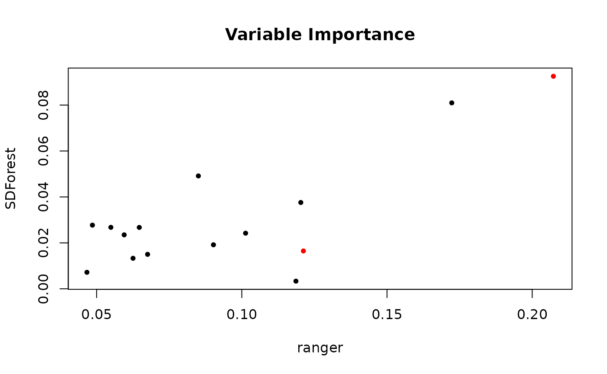
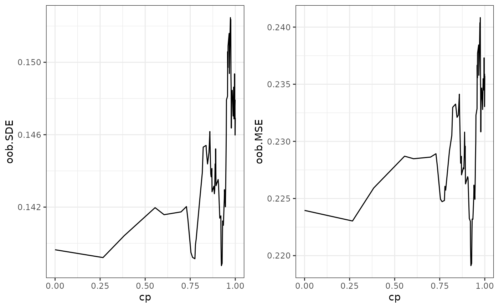
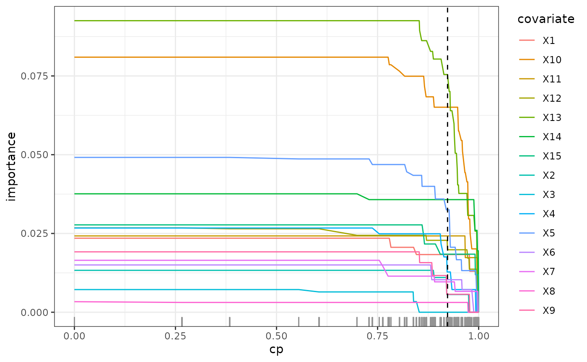
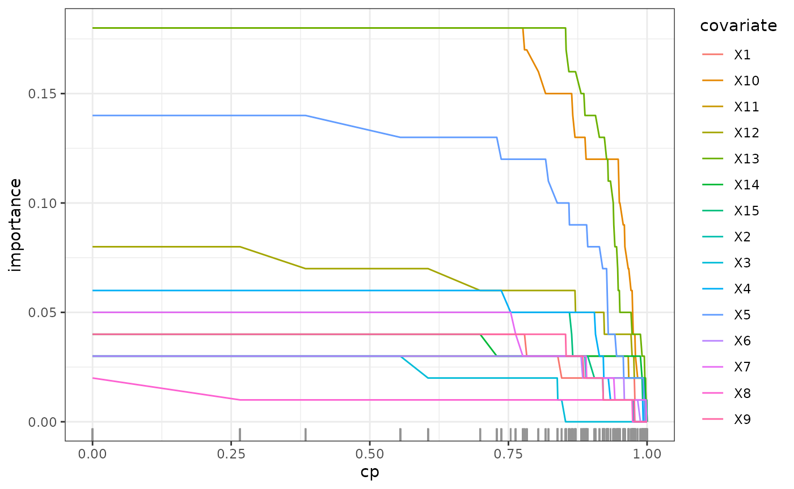
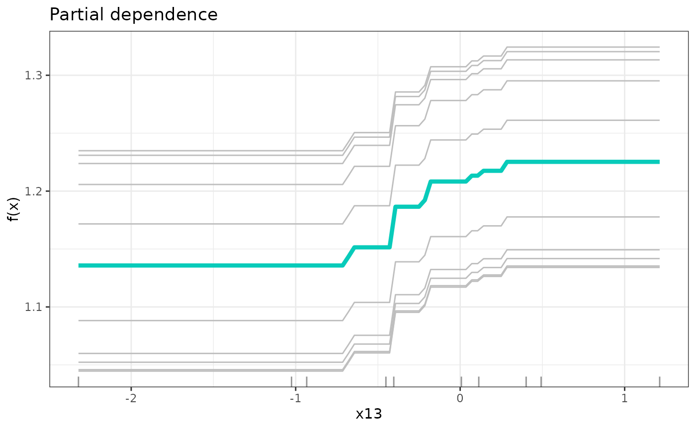

SDForest
SDForest.Rmd
library(SDForest)
set.seed(42)
# simulation of confounded data
sim_data <- simulate_data_nonlinear(q = 2, p = 15, n = 10, m = 2)
X <- sim_data$X
Y <- sim_data$Y
train_data <- data.frame(X, Y)
# causal parents of y
sim_data$j
#> [1] 13 7
# comparison to classical random forest
fit_ranger <- ranger::ranger(Y ~ ., train_data, importance = 'impurity')
fit <- SDForest(x = X, y = Y, nTree = 10, Q_type = 'pca', q_hat = 2)
fit <- SDForest(Y ~ ., train_data)
fit
#> SDForest result
#>
#> Number of trees: 100
#> Number of covariates: 15
#> OOB loss: 0.22
#> OOB spectral loss: 0.14
# comparison of variable importance
imp_ranger <- fit_ranger$variable.importance
imp_sdf <- fit$var_importance
imp_col <- rep('black', length(imp_ranger))
imp_col[sim_data$j] <- 'red'
plot(imp_ranger, imp_sdf, col = imp_col, pch = 20,
xlab = 'ranger', ylab = 'SDForest',
main = 'Variable Importance')
# check regularization path of variable importance
path <- regPath(fit)
# out of bag error for different regularization
plotOOB(path)
plot(path)
# detection of causal parent using stability selection
stablePath <- stabilitySelection(fit)
plot(stablePath)
# pruning of forest according to optimal out-of-bag performance
fit <- prune(fit, cp = path$cp_min)
# partial functional dependence of y on the first causal parent
dep <- partDependence(fit, sim_data$j[1])
plot(dep, n_examples = 100)